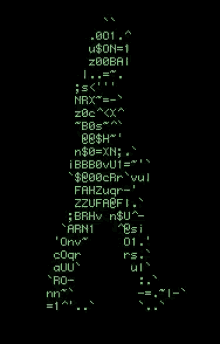

Science and Technology Council
IIT Mandi
Programming Club (KamandPrompt)
An enthusiastic coder ? Here is the club for you. It is a club dedicated to programming related activities. It keeps you updated with all the programming related activities and competitions. It also organizes several competitions and workshops to increase coding skills. The Association for Computing and Machinery(ACM) Chapter at IIT Mandi organizes various guest lectures and tutorials from time to time.
Visit Website
Robotronics Club
Robotics + Electronics = Robotronics. This club works in the field of both robotics and electronics. In electronics domain, it works on analog and digital electronics helping in developing practical skills in building and designing circuits. On the other hand in robotics it provides everything that students need to build robots : workspace , tools, supplies, money and experienced people to answer questions and help with projects.
Visit Website
Entrepreneurship Cell
E-Cell is a holographic abbreviation adopted by the entrepreneurship club of IIT Mandi. It's an alumnus initiation and currently is the stewardship of a team of five inter-disciplinary students with the mentorship of Dr. Satvasheel Powar, churning their ideas to reach the various aspects of what lies in this "business" of reaching the society. And as the name celebrates our crazy love for subjects related to business and its disciplinaries we always strive to give a glimpse of the potions of business by conducting multifarious of events.
Visit Website
Yantrik Club
As a part of the technical council of IIT Mandi, this club plays a cruical role in the field of mechanical engineering. It focuses on developing green and effective energy methods. It organizes activities like arCAD, MechFest.
Visit Website
Nirmaan Club
Nirmaan Club aims at creating a realization among students of the importance of Civil Engineering aspects in day to day which are often ignored by organizing events, workshops, quizzes, projects etc.
Visit Website
Space Technology and Astronomy Cell (STAC)
STAC aims at making students familiar with everything related to Astronomy, Space and Open Source development in the field of Space Technology. The club has 2 telescopes, a 12" telescope under construction, a pair of binoculars and organizes frequent star-gazing sessions and undertakes several interesting technical projects.
Visit Website
Services currently hosted on the SNTC Server are-
-
Judge0 API
Allows users to compile their programs in a range of language options.
-
Websites for SNTC Clubs
The websites for all clubs under SNTC will be hosted on SNTC Server.
-
Student Projects
Student Projects can also be hosted on SNTC Server.
Science and Technology Council
SnTC ,short for, Science and Technology Council is IIT Mandi’s Technical Society. It is a body of students advised by faculty. The major events for SnTC are Inter IIT Tech Meet, Avishkar and Utkarsh. SnTC constitutes of following clubs:
- Robotronics Club
- Space Technology and Astronomy Cell (STAC)
- Yantrik Club
- Programming Club
- Nirmaan Club
- Entrepreneurship Cell
Each club is coordinated by two coordinators and comprises of students of similar interest. Each club is advised by a faculty advisor and a co-advisor. All the clubs are open for all the students of IIT Mandi. However, a core team is formed for efficient running of the club.

Inter-IIT Tech Meet
Inter IIT Tech Meet is the annual technological competition organized by the Indian Institutes of Technology and qualifies as the only technical event wherein all the IITs participate. This event is hosted in cycle by one of the participating institutions. At end of each Tech Meet the next host IIT is chosen by mutual consensus.
IIT Mandi is proud to display its achievements and strides displayed by our brilliant contingents.